<!doctype html>
<html lang="es-AR">
<head>
<meta charset="utf-8">
<title>Handyx · Remera, edición 01</title>
<link rel="stylesheet" href="../../plantilla/base.css">
<style>
  /* Presentación de la remera v5 (una tinta, serigrafía). Los archivos de impresión salen de herramientas/remera.py.
     Tablero 1: frente y espalda. Tablero 2: detalle del estampado y ficha. Tablero 3: las tres telas. */
  body { background: #555; padding: 40px; display: grid; gap: 40px; }
  .post { position: relative; width: 2000px; height: 1250px; overflow: hidden; background: #EFEBE2; color: var(--navy); }
  .post::after { content: ''; position: absolute; inset: 0; pointer-events: none; opacity: .14; mix-blend-mode: multiply;
    background-image: url("data:image/svg+xml,%3Csvg xmlns='http://www.w3.org/2000/svg' width='220' height='220'%3E%3Cfilter id='n'%3E%3CfeTurbulence type='fractalNoise' baseFrequency='.85' numOctaves='2' stitchTiles='stitch'/%3E%3CfeColorMatrix values='0 0 0 0 0 0 0 0 0 0 0 0 0 0 0 0 0 0 .9 0'/%3E%3C/filter%3E%3Crect width='220' height='220' filter='url(%23n)'/%3E%3C/svg%3E"); }
  .cab { position: absolute; left: 90px; right: 90px; top: 64px; display: flex; justify-content: space-between; align-items: baseline; font: 800 15px/1 var(--f-texto); letter-spacing: .3em; text-transform: uppercase; }
  .cab b { font: 900 34px/1 var(--f-titulos); font-stretch: 125%; letter-spacing: -.01em; text-transform: none; }
  .pie { position: absolute; left: 90px; right: 90px; bottom: 56px; display: flex; justify-content: space-between; font: 600 14px/1.4 var(--f-texto); letter-spacing: .14em; text-transform: uppercase; color: #5F6B84; border-top: 1.5px solid rgba(14,29,54,.2); padding-top: 18px; }
  .prenda { position: absolute; }
  .prenda svg { width: 100%; display: block; overflow: visible; }
  .lbl { margin-top: 18px; text-align: center; font: 800 13px/1 var(--f-texto); letter-spacing: .34em; text-transform: uppercase; color: #5F6B84; }
  .tela-zoom { position: absolute; left: 90px; top: 150px; width: 1180px; height: 960px; overflow: hidden; border-radius: 4px; }
  .tela-zoom::after { content: ''; position: absolute; inset: 0; opacity: .22; mix-blend-mode: overlay;
    background-image: repeating-linear-gradient(0deg, rgba(255,255,255,.18) 0 1px, transparent 1px 3px), repeating-linear-gradient(90deg, rgba(0,0,0,.12) 0 1px, transparent 1px 3px); }
  .ficha { position: absolute; left: 1350px; top: 160px; width: 560px; }
  .ficha h3 { font: 900 40px/1 var(--f-titulos); font-stretch: 125%; letter-spacing: -.01em; }
  .ficha dl { margin-top: 36px; display: grid; grid-template-columns: 170px 1fr; row-gap: 22px; font: 500 18px/1.4 var(--f-texto); }
  .ficha dt { font-weight: 800; font-size: 13px; letter-spacing: .26em; text-transform: uppercase; color: #5F6B84; padding-top: 4px; }
  .muestras { margin-top: 40px; display: flex; gap: 22px; }
  .muestras div { width: 150px; }
  .muestras i { display: block; height: 120px; border-radius: 6px; box-shadow: inset 0 0 0 1.5px rgba(14,29,54,.12); }
  .muestras span { display: block; margin-top: 10px; font: 700 14px/1.3 var(--f-texto); }
  .muestras small { display: block; font: 500 13px/1.3 var(--f-texto); color: #5F6B84; }
</style>
</head>
<body>
<svg width="0" height="0" style="position:absolute"><defs>
  <linearGradient id="vol" x1="0" x2="1"><stop offset="0" stop-color="#000" stop-opacity=".2"/><stop offset=".16" stop-color="#000" stop-opacity="0"/><stop offset=".84" stop-color="#000" stop-opacity="0"/><stop offset="1" stop-color="#000" stop-opacity=".2"/></linearGradient>
  <linearGradient id="luz" x1="0" y1="0" x2="0" y2="1"><stop offset="0" stop-color="#fff" stop-opacity=".09"/><stop offset=".5" stop-color="#fff" stop-opacity="0"/><stop offset="1" stop-color="#000" stop-opacity=".1"/></linearGradient>
  <path id="cuerpo" d="M128 22 C150 34 175 40 200 40 C225 40 250 34 272 22 L360 58 C372 63 381 72 386 84 L414 150 C417 158 413 166 405 169 L352 188 C344 191 336 187 333 179 L322 150 L324 418 C324 428 316 436 306 436 L94 436 C84 436 76 428 76 418 L78 150 L67 179 C64 187 56 191 48 188 L-5 169 C-13 166 -17 158 -14 150 L14 84 C19 72 28 63 40 58 Z"/>
</defs></svg>
<script>
  const TELAS = {
    azul: { tela: '#1F57A8', tinta: 'blanca', nombre: 'Azul Handyx', nota: 'Tinta blanca' },
    navy: { tela: '#13284A', tinta: 'blanca', nombre: 'Navy', nota: 'Tinta blanca' },
    hueso: { tela: '#F1EEE6', tinta: 'navy', nombre: 'Hueso', nota: 'Tinta navy' },
  };
  const remera = (t, lado) => `<svg viewBox="-20 0 440 460">
      <ellipse cx="200" cy="448" rx="176" ry="9" fill="#000" opacity=".13"/>
      <use href="#cuerpo" fill="${t.tela}"/><use href="#cuerpo" fill="url(#vol)"/><use href="#cuerpo" fill="url(#luz)"/>
      <path d="M112 210 C130 270 120 336 136 410 M288 214 C272 276 282 342 266 410" fill="none" stroke="#000" stroke-opacity=".06" stroke-width="6" stroke-linecap="round"/>
      ${lado === 'frente'
        ? `<path d="M128 22 C150 34 175 40 200 40 C225 40 250 34 272 22 C258 52 232 66 200 66 C168 66 142 52 128 22 Z" fill="#000" opacity=".2"/><path d="M128 22 C142 52 168 66 200 66 C232 66 258 52 272 22" fill="none" stroke="#000" stroke-opacity=".18" stroke-width="5"/>
           <image href="remera-frente-tinta-${t.tinta}.svg" x="236" y="104" width="44" height="14"/>`
        : `<path d="M128 22 C150 34 175 40 200 40 C225 40 250 34 272 22" fill="none" stroke="#000" stroke-opacity=".2" stroke-width="5"/>
           <image href="remera-nuca-tinta-${t.tinta}.svg" x="186" y="50" width="28" height="6"/>
           <image href="remera-espalda-tinta-${t.tinta}.svg" x="132" y="96" width="136" height="64"/>`}
      <path d="M-8 158 L44 178 M408 158 L356 178 M80 424 H320" stroke="#000" stroke-opacity=".16" stroke-width="1.2" stroke-dasharray="3 3"/>
    </svg>`;
  const az = TELAS.azul;
  document.write(`
  <section class="post" id="remera-1">
    <div class="cab"><b>Remera Handyx · Edición 01</b><span>Azul Handyx · tinta blanca</span></div>
    <div class="prenda" style="left:150px;top:170px;width:790px">${remera(az, 'frente')}<p class="lbl">Frente</p></div>
    <div class="prenda" style="left:1060px;top:170px;width:790px">${remera(az, 'espalda')}<p class="lbl">Espalda</p></div>
    <div class="pie"><span>Serigrafía · una tinta</span><span>La costa de Mar del Plata en una sola línea</span><span>Handyx · Hecho en Mar del Plata</span></div>
  </section>
  <section class="post" id="remera-2">
    <div class="cab"><b>Detalle del estampado</b><span>Espalda · escala 1:2</span></div>
    <div class="tela-zoom" style="background:${az.tela}"></div>
    <div class="ficha"><h3>Una línea,<br>toda la costa.</h3>
      <dl><dt>Dibujo</dt><dd>Torreón del Monje, la Rambla, el Casino, las torres, la Catedral y el faro, en un trazo continuo.</dd>
        <dt>Técnica</dt><dd>Serigrafía, una tinta. Sin fondos ni degradés.</dd>
        <dt>Espalda</dt><dd>280 mm de ancho, a 80 mm del cuello.</dd>
        <dt>Pecho</dt><dd>Logo de 80 mm, lado izquierdo.</dd>
        <dt>Nuca</dt><dd>«MDP · 2026», 60 mm.</dd></dl>
      <div class="muestras">${Object.values(TELAS).map((t) => `<div><i style="background:${t.tela}"></i><span>${t.nombre}</span><small>${t.nota}</small></div>`).join('')}</div>
    </div>
    <div class="pie"><span>Archivos vectoriales: tinta blanca y tinta navy</span><span>Pedir prueba de estampado antes de la tirada</span></div>
  </section>
  <section class="post" id="remera-3">
    <div class="cab"><b>Tres telas</b><span>Espalda</span></div>
    ${Object.values(TELAS).map((t, i) => `<div class="prenda" style="left:${100 + i * 610}px;top:220px;width:580px">${remera(t, 'espalda')}<p class="lbl">${t.nombre} · ${t.nota}</p></div>`).join('')}
    <div class="pie"><span>Serigrafía · una tinta</span><span>Handyx · Edición 01</span></div>
  </section>`);
</script>
</body>
</html>
